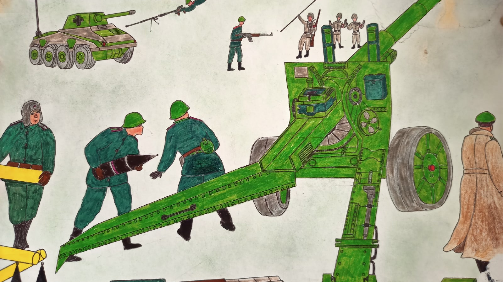

Детское творчество

Амелия Козак 3"Б"

Милена Янковская 7"А"
Иван Аниськович 8"Б"
Эдуард Зыков 9"А"
Яна Куницкая 9"Б"
Глеб Бурдейко 9"А"

Год 1939
Шел тысяча девятьсот тридцать девятый,
Кто жил тогда, тот помнит этот год проклятый,
Фашизм в Европе черною чумою,
Хотел весь мир он видеть под собою.
Но на Союз священный зря он пасть разинул.
Не дооценив славян
В истории он сгинул
Теперь из годв в год мы в месяц май
Своим дедам приносим уважения дань.
Шел год тысяча девятьсот тридцать девятый!
Дети войны я вами горжусь!
1941-1945 годы уже давно остались в прошлом,но память о них жива и сегодня ! Ее храним и будем хранить мы – внуки
и правнуки тех людей, которых опалила своим крылом война. Я сейчас не говорю только о солдатах ,но и про старших
сестер ,которые остались без матерей и следили за своими младшими братьями прятали ,спасали их от холода и голода
,отдавали почти все что у них было , чтобы спасти их жизнь .
Это сочинение я посвящаю детям войны О детях которые смогли справятся с тем ,с чем не справились многие взрослые .
Я восхищаюсь героизмом, смелостью ,находчивостью, этих детей.Они были на столько сильны духом что смогли обхитрить
и победить многих фашистов .
Вот например Зина Портнова , работавшая посудомойкой в столовой курсов переподготовки немецких офицеров, отравила
пищу, приготовленную на обед.
В результате диверсии погибло около сотни гитлеровцев. Желая доказать свою непричастность, девочка попробовала
отравленный суп и лишь чудом осталась жива.
Но однажды во время исполнения задания Зину опознали и задержали, как участницу подполья. При попытке бегства Зине
прострелили ноги. Началась череда зверских пыток.
Несмотря на ужасные страдания, девочка не предавала своих, и эта стойкость бесила палачей ещё больше. На последнем
допросе в тюрьме гестапо в городе Полоцке гитлеровцы выкололи ей глаза и отрезали уши.
Так же хочу отметить Володю Дубинина В декабре 1941 г. немцы решили затопить каменоломни вместе с находящимися
внутри людьми.
Володя Дубинин сумел раздобыть эту информацию и вовремя предупредить товарищей о грозящей им опасности. Случилось
это буквально за несколько часов до начала карательной операции.
Спешно соорудив плотины, бойцы перекрыли вход воде, находясь в ней уже по пояс.
Погиб Володя Дубинин, подорвавшись на сети минных полей, которыми немцы окружили каменоломни.
Это конечно далеко не все дети,которые стали героями ,их намного больше .
Под конец
Во время войны не было ничего из того, что сейчас есть у нас. Люди довольствовались малым. Поэтому мы должны быть
благодарны жизнью за то, что у нас все хорошо и спокойно, что мы можем ходить в школу, иметь детские игрушки,
красиво одеваться и вкусно кушать. Не хочу видеть войны. Ни один человек в этом мире не заслуживает этого
страшного, наполненного потерей близких и пустотой события. Такие сочинения помогут выразить эмоции и переживания.
Пусть же они остаются только на листе, никогда не приходя в реальность